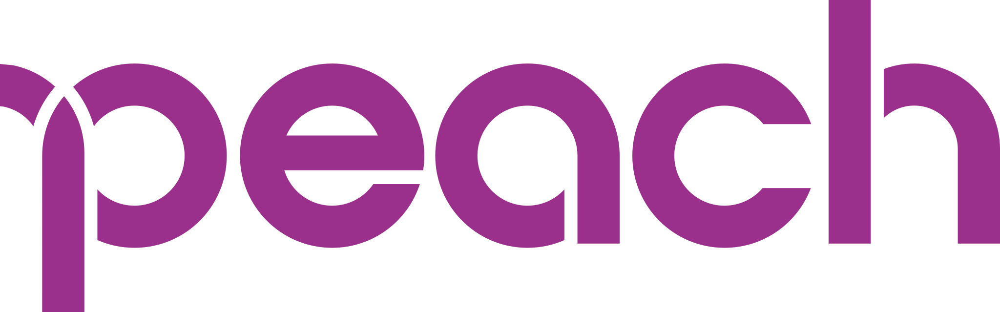

旅行費用の目安
「タイは物価が安い」とよく紹介されていますが、気を抜くとレストランでのお会計が1,500円を超えることもしばしば。屋台やローカル食堂をうまく活用すれば1食100〜200円台に抑えられますが、観光地周辺のカフェやレストランは日本と変わらない価格帯も珍しくありません。航空券はエアアジアなどのLCCを利用すれば往復4〜7万円台も狙えます。
| 節約 | 標準 | こだわり派 | |
|---|---|---|---|
| 航空券（往復） | LCC 4〜7万円 | 7〜13万円 | FSC 13〜22万円 |
| ホテル（1泊） | 1,000〜3,000円 | 4,000〜8,000円 | 15,000〜30,000円 |
| 食費（1日） | 500〜1,000円 | 1,500〜2,500円 | 3,000〜5,000円 |
| 交通（1日） | BTS・Grab 300円 | Grab中心 800円 | タクシー 1,500円 |
| 合計目安 | 6〜10万円 | 10〜16万円 | 22万円〜 |
| ✈️ | 航空券（往復）ZIPAIR・ピーチなどLCCが安い タイ航空・JALは快適性◎（燃油サーチャージ高騰でFSCは往復13万円〜が目安） |
4〜22万円 |
| 🛏️ | ホテル（1泊）ゲストハウス：500〜1,500円・中級：3,000〜8,000円 リゾートホテルでも日本より格安 |
〜2万円/泊 |
| 🍜 | 食費（1日）屋台なら1食100〜300円が当たり前、レストランでも500〜1,500円以内が多い 屋台では現金払いが基本。WiseカードはATM引き出しに便利。 |
500〜2,000円/日 |
| 🚕 | 交通費（1日）BTS・MRTなど公共交通が便利・格安 Grabで移動するとぼったくりなしで安心 |
300〜1,500円/日 |
| 📍 | 観光・アクティビティ寺院の入場料は50〜500THB程度 離島クルーズ・象さんツアーなども格安 |
500〜3,000円/日 |
| 🌐 | SIM・Wi-Fi空港・コンビニ（7-Eleven）でSIM購入可 eSIMなら出発前にアプリで設定完了 |
300〜1,000円 |
・屋台・コンビニ（セブンイレブン）活用で食費を大幅節約
・BTS/MRTのラビットカード・MRTカードが便利でお得
・チップはレストランで10〜20THB程度が目安（義務ではない）
両替・支払い
タイでは屋台やローカル交通は現金払いが基本ですが、ホテルやショッピングモールではクレジットカードも広く使えます。現地通貨バーツへの両替は空港より市内の両替所（スーパーリッチなど）のほうがレートが良い場合が多く、少額を空港で崩してから市内で両替するのがおすすめです。
屋台・トゥクトゥク・ローカルマーケットではお釣りが出ないことが多い。20THB・50THB・100THBの小額紙幣を多めに準備しておくとスムーズ。
海外でクレジットカードを使うたびに不正利用のリスクは高まります。筆者自身も海外渡航後に2回不正利用を経験したことをきっかけに、現在は海外ではWiseカードをメインに使うようにしています。チャージした分しか使えないため万が一の際も被害が限定的で、旅好きの友人たちの間でも最近かなり普及してきています。
航空券の予約
日本〜バンコク間は直行便で約6時間。成田・羽田・関西・名古屋から複数の航空会社が運航しており、LCCを活用すれば往復3〜7万円台での旅行も可能です。バンコクへはLCCの直行便が出ているのも大きなメリットで、帰国時にトランジットがないぶん旅行疲れしていてもそのまま日本に帰ってこられるのが嬉しいポイントです。




・GW・年末年始・お盆は2〜3ヶ月前から価格が上がりやすい
・グリーンシーズン（6〜9月）は直前でも安値が出ることがある
・複数サイトを比較して最安値を見つけよう
ホテルの選び方
タイはバンコクの鉄道（BTS/MRT）沿いに宿を取ると、渋滞に巻き込まれず観光もグルメも動きやすくなります。カオサンやスクンビットなど繁華街は便利な反面、深夜まで賑やかなので、静かに休みたいなら一本外した通りを選ぶのも手。治安は概ね良好ですが、盛り場では置き引きや客引きに注意し、口コミで周辺の雰囲気を確かめてから予約すると安心です。
初めてのバンコクはBTS沿線（スクンビット・シーロム）が移動に便利。チェンマイは旧市街（オールドシティ）周辺に泊まると徒歩観光がしやすい。プーケットはパトンビーチ周辺が活気があり便利。
30カ国以上を旅した管理人が実体験をもとに作った完全版持ち物リストもあります。